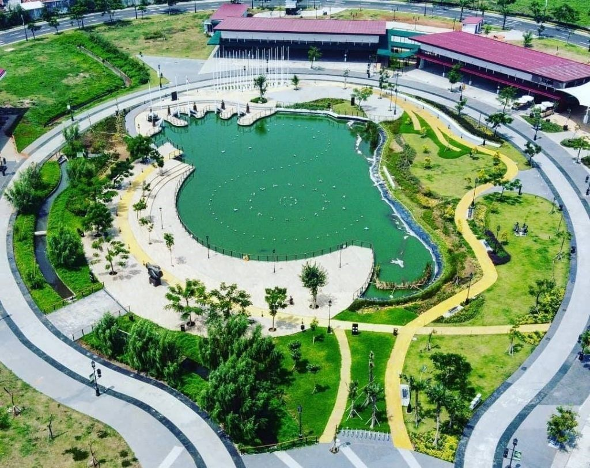
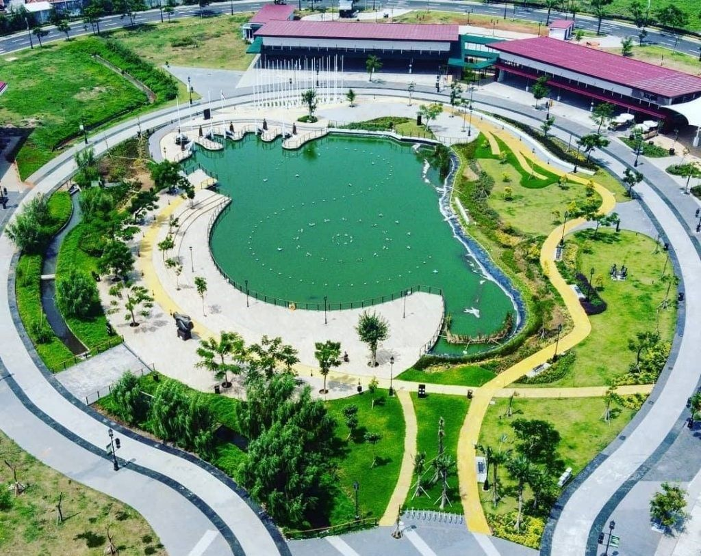

gallery fasilitas olahraga
 

SEPUTAR FASILITAS OLAHRAGA KOTA BANDUNG
Kondisi fasilitas olahraga di Kota Bandung mengalami kemajuan yang cukup signifikan, namun masih menghadapi berbagai tantangan, khususnya dalam hal pemerataan dan kelengkapan di wilayah tertentu. Saat ini, terdapat sekitar 17 fasilitas olahraga yang dikelola oleh Dinas Pemuda dan Olahraga (Dispora), tersebar di delapan kecamatan, dengan Kecamatan Lengkong sebagai salah satu yang memiliki kelengkapan fasilitas terbaik. Namun, wilayah seperti Bandung Timur masih kekurangan fasilitas olahraga akibat keterbatasan lahan yang sudah banyak digunakan untuk permukiman. Ketimpangan ini juga tampak di lingkungan pendidikan, di mana fasilitas olahraga di tingkat Sekolah Dasar (SD) dan Sekolah Menengah Pertama (SMP) masih sangat minim, sehingga menyulitkan proses pembinaan atlet usia dini. Sementara itu, fasilitas di tingkat Sekolah Menengah Atas (SMA) sudah mulai menunjukkan kemajuan dengan keberadaan lapangan dan gedung olahraga yang mendukung kegiatan ekstrakurikuler. Pemerintah Kota Bandung terus melakukan berbagai upaya untuk memperbaiki kondisi ini, salah satunya melalui penerbitan regulasi turunan dari Peraturan Daerah tentang Penyelenggaraan Keolahragaan, guna mendukung pembangunan budaya olahraga yang lebih merata. Program-program seperti Festival Olahraga Kabupaten Bandung (FORKAB) juga dimanfaatkan untuk memasyarakatkan olahraga dan mencari bibit atlet potensial, sekaligus membangun ruang interaksi sosial yang positif. Di sisi lain, pembangunan sarana olahraga di wilayah sekitar seperti Kabupaten Bandung Barat masih terkendala anggaran, dengan beberapa proyek seperti Gedung Olahraga Pemuda yang belum terselesaikan. Pemerintah juga memperhatikan aspek kesehatan dengan menerapkan pengawasan ketat terhadap protokol kesehatan di fasilitas olahraga. Secara keseluruhan, meskipun Bandung memiliki potensi dan keragaman fasilitas olahraga, masih diperlukan peningkatan baik dari sisi kuantitas maupun kualitas, serta pemerataan agar seluruh masyarakat dapat menikmati manfaatnya secara adil dan berkelanjutan.
BERITA TERKAIT
Section ini mengantarkan anda ke berita terkait masalah kesehatan dan fasilitas kesehatan